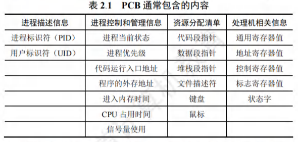
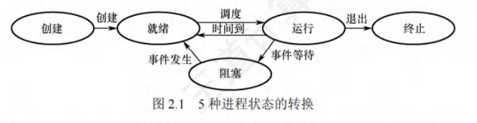
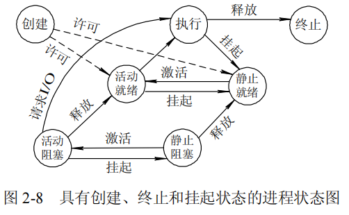
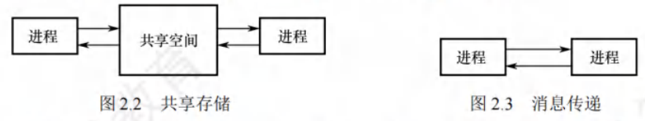
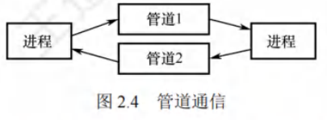

进程
[toc]
进程的引入
引入进程的原因：在多道程序环境下，允许多个程序并发执行，此时它们将失去封闭性，并具有间断性及不可再现性的特征。进程更好地描述和控制程序的并发执行，实现操作系统的并发性和共享性。
为了使参与并发执行的每个程序(含数据)都能独立地运行，配置了一个专门的数据结构，称为进程控制块(PCB)。
- 系统利用 PCB 来描述进程的基本情况和运行状态，进而控制和管理进程。
- 由程序段、相关数据段和PCB三部分构成了进程实体(又称进程映像)。
- 创建进程，就是创建进程的PCB；撤销进程，就是撤销进程的PCB。
进程的定义
进程是进程实体的运行过程，是系统进行资源分配和调度的一个独立单位。
进程特征
进程是由多道程序的并发执行而引出的，它和程序是两个截然不同的概念。程序是静态的，进程是动态的，进程的基本特征是对比单个程序的顺序执行提出的。
- 动态性。进程是程序的一次执行，它有着创建、活动、暂停、终止等过程，具有一定的生命周期，是动态地产生、变化和消亡的。动态性是进程最基本的特征。
- 并发性。指多个进程同存于内存中，能在一段时间内同时运行。引入进程的目的就是使进程能和其他进程并发执行。并发性是进程的重要特征，也是操作系统的重要特征。
- 独立性。指进程是一个能独立运行、独立获得资源和独立接受调度的基本单位。凡未建立 PCB 的程序，都不能作为一个独立的单位参与运行。
- 异步性。由于进程的相互制约，使得进程按各自独立的、不可预知的速度向前推进。异步性会导致执行结果的不可再现性，为此在操作系统中必须配置相应的进程同步机制。
进程组成
进程是一个独立的运行单位，也是操作系统进行资源分配和调度的基本单位。
进程控制块
在进程的整个生命期中，系统总是通过PCB对进程进行控制的，即系统唯有通过进程的PCB才能感知到该进程的存在。
- 进程创建时，操作系统为它新建一个PCB，该结构之后常驻内存，任意时刻都可以存取，并在进程结束时删除。PCB是进程实体的一部分，是进程存在的唯一标志。
- 进程执行时，系统通过其PCB了解进程的现行状态信息，以便操作系统对其进行控制和管理；
- 进程结束时，系统收回其 PCB，该进程随之消亡。
- 当操作系统希望调度某个进程运行时，要从该进程的PCB中查出其现行状态及优先级；
- 在调度到某个进程后，要根据其PCB中所保存的CPU状态信息，设置该进程恢复运行的现场，并根据其PCB中的程序和数据的内存始址，找到其程序和数据；
- 进程在运行过程中，当需要和与之合作的进程实现同步、通信或访问文件时，也需要访问PCB；
- 当进程由于某种原因而暂停运行时，又需将其断点的CPU环境保存在PCB中。
进程控制块包含的内容

- 进程描述信息。进程标识符：标志各个进程，每个进程都有一个唯一的标识号。用户标识符：进程所归属的用户，用户标识符主要为共享和保护服务。
- 进程控制和管理信息。进程当前状态：描述进程的状态信息，作为CPU分配调度的依据。进程优先级：描述进程抢占CPU的优先级，优先级高的进程可优先获得CPU。
- 资源分配清单，用于说明有关内存地址空间或虚拟地址空间的状况，所打开文件的列表和所使用的输入/输出设备信息。
- 处理机相关信息，也称CPU的上下文，主要指 CPU中各寄存器的值。当进程处于执行态时，CPU的许多信息都在寄存器中。当进程被切换时，CPU状态信息都必须保存在相应的PCB中，以便在该进程重新执行时，能从断点继续执行。
进程控制块的组织方式
-
链接方式：将同一状态的 PCB 链接成一个队列，不同状态对应不同的队列，也可将处于阻塞态的进程的 PCB，根据其阻塞原因的不同，排成多个阻塞队列。
-
索引方式：将同一状态的进程组织在一个索引表中，索引表的表项指向相应的PCB，不同状态对应不同的索引表，如就绪索引表和阻塞索引表等。
程序段
程序段就是能被进程调度程序调度到CPU执行的程序代码段。
注意，程序可被多个进程共享，即多个进程可以运行同一个程序。
数据段
一个进程的数据段，可以是进程对应的程序加工处理的原始数据，也可以是程序执行时产生的中间或最终结果。
进程的状态与转换
进程的状态
进程在其生命周期内，由于系统中各个进程之间的相互制约及系统的运行环境的变化，使得进程的状态也在不断地发生变化。
通常进程有以下 5 种状态，前 3 种是进程的基本状态。
- 运行态。进程正在 CPU 上运行。在单 CPU 中，每个时刻只有一个进程处于运行态。
- 就绪态。进程获得了除CPU外的一切所需资源，一旦得到CPU，便可立即运行。系统中处于就绪态的进程可能有多个，通常将它们排成一个队列，称为就绪队列。
- 阻塞态，又称等待态。进程正在等待某一事件而暂停运行，如等待某个资源可用(不包括 CPU)或等待 I/O 完成。即使 CPU 空闲，该进程也不能运行。系统通常将处于阻塞态的进程也排成一个队列，甚至根据阻塞原因的不同，设置多个阻塞队列。
- 创建态。进程正在被创建，尚未转到就绪态。创建进程需要多个步骤：首先申请一个空白 PCB，并向 PCB中填写用于控制和管理进程的信息；然后为该进程分配运行时所必须的资源；最后将该进程转入就绪态并插入就绪队列。但是，如果进程所需的资源尚不能得到满足，如内存不足，则创建工作尚未完成，进程此时所处的状态称为创建态。
- 终止态。进程正从系统中消失，可能是进程正常结束或其他原因退出运行。进程需要结束运行时，系统首先将该进程置为终止态，然后进一步处理资源释放和回收等工作。
- 区别就绪态和阻塞态：
- 就绪态是指进程仅缺少 CPU，只要获得 CPU 就立即运行；
- 而阻塞态是指进程需要其他资源(除了CPU)或等待某一事件。
- 之所以将CPU和其他资源分开，是因为在分时系统的时间片轮转机制中，每个进程分到的时间片是若干毫秒。也就是说，进程得到 CPU 的时间很短且非常频繁，进程在运行过程中实际上是频繁地转换到就绪态的；
- 而其他资源(如外设)的使用和分配或某一事件的发生(如I/O完成)对应的时间相对来说很长，进程转换到阻塞态的次数也相对较少。这样来看，就绪态和阻塞态是进程生命周期中两个完全不同的状态。
进程的状态转换
图 2.1说明了5种进程状态的转换，3种基本状态之间的转换如下：
- 就绪态→运行态：处于就绪态的进程被调度后，获得CPU资源(分派CPU的时间片)，于是进程由就绪态转换为运行态。
- 运行态→就绪态：处于运行态的进程在时间片用完后，不得不让出CPU，从而进程由运行态转换为就绪态。此外，在可剥夺的操作系统中，当有更高优先级的进程就绪时，调度程序将正在执行的进程转换为就绪态，让更高优先级的进程执行。
- 运行态→阻塞态：进程请求某一资源(如外设)的使用和分配或等待某一事件的发生(如I/O操作的完成)时，它就从运行态转换为阻塞态。进程以系统调用的形式请求操作系统提供服务，这是一种特殊的、由运行用户态程序调用操作系统内核过程的形式。
- 阻塞态→就绪态：进程等待的事件到来时，如I/O操作完成或中断结束时，中断处理程序必须将相应进程的状态由阻塞态转换为就绪态。

需要注意的是，一个进程从运行态变为阻塞态是主动的行为，而从阻塞态变为就绪态是被动的行为，需要其他相关进程的协助。
进程控制
进程控制的主要功能是对系统中的所有进程实施有效的管理，它具有创建新进程、撤销已有进程、实现进程状态转换等功能。
在操作系统中，一般将进程控制用的程序段称为原语，原语的特点是执行期间不允许中断，它是一个不可分割的基本单位。
创建
允许一个进程创建另一个进程，此时创建者称为父进程，被创建的进程称为子进程。子进程可以继承父进程所拥有的资源。当子进程被撤销时，应将其从父进程那里获得的资源还给父进程。此外，在撤销父进程时，通常也会同时撤销其所有的子进程。
-
导致创建进程的操作
- 终端用户登录系统
- 作业调度
- 系统提供服务
- 用户程序的应用请求
-
创建一个新进程的过程(创建原语)
- 为新进程分配一个唯一的进程标识号，并申请一个空白PCB (PCB是有限的)。若PCB申请失败，则创建失败。
- 为进程分配其运行所需的资源，如内存、文件、1/0设备和CPU时间等(在PCB中体现)。这些资源或从操作系统获得，或仅从其父进程获得。如果资源不足(如内存)，则并不是创建失败，而是处于创建态，等待内存资源。
- 初始化 PCB，主要包括初始化标志信息、初始化 CPU 状态信息和初始化 CPU 控制信息，以及设置进程的优先级等。
- 若进程就绪队列能够接纳新进程，则将新进程插入就绪队列，等待被调度运行。
终止
-
导致终止进程的事件
- 正常结束，表示进程的任务已完成并准备退出运行。
- 异常结束，表示进程在运行时，发生了某种异常事件，使程序无法继续运行，如存储区越界、保护错、非法指令、特权指令错、运行超时、算术运算错、I/O 故障等。
- 外界干预，指进程应外界的请求而终止运行，如操作员或操作系统干预、父进程请求和父进程终止。
-
终止一个进程的过程(终止原语)：
- 根据被终止进程的标识符，检索出该进程的PCB，从中读出该进程的状态。
- 若被终止进程处于运行状态，立即终止该进程的执行，将CPU资源分配给其他进程。
- 若该进程还有子孙进程，则通常需将其所有子孙进程终止(有些系统无此要求)。
- 将该进程所拥有的全部资源，或归还给其父进程，或归还给操作系统。
- 将该PCB从所在队列(链表)中删除。
阻塞
- 导致阻塞进程的事件：正在执行的进程，由于期待的某些事件未发生
- 请求系统资源失败
- 等待某种操作的完成
- 新数据尚未到达或无新任务可做
阻塞是进程自身的一种主动行为，也因此只有处于运行态的进程(获得CPU)，才可能将其转为阻塞态。
- 阻塞原语的执行过程如下：
- 找到将要被阻塞进程的标识号(PID)对应的PCB。
- 若该进程为运行态，则保护其现场，将其状态转为阻塞态，停止运行。
- 将该PCB插入相应事件的等待队列，将CPU资源调度给其他就绪进程。
唤醒
-
导致唤醒进程的事件：当被阻塞进程所期待的事件出现时，如它所期待的I/O操作已完成或其所期待的数据已到达
- 释放该I/O设备的进程
- 提供数据的进程
-
唤醒原语的执行过程如下：
- 在该事件的等待队列中找到相应进程的PCB。
- 将其从等待队列中移出，并置其状态为就绪态。
- 将该PCB插入就绪队列，等待调度程序调度。
-
Block原语和Wakeup原语是一对作用刚好相反的原语，必须成对使用。
- 如果在语某个进程中调用了Block 原语，则必须在与之合作的或其他相关的进程中安排一条相应的Wakeup原语，以便唤醒阻塞进程；
- 否则，阻塞进程将因不能被唤醒而永久地处于阻塞态。
挂起
-
导致挂起进程的事件
- 用户进程请求将自己挂起
- 父进程请求将自己的某个子进程挂起
-
挂起原语的执行过程如下：
- 检查被挂起进程的状态。
- 若处于活动就绪状态，便将其改为静止就绪。
- 对于活动阻塞状态的进程，则将之改为静止阻塞。为了方便用户或父进程考查该进程的运行情况而把该进程的PCB复制到某指定的内存区域。
- 若被挂起的进程正在执行，则转向调度程序重新调度。
激活
-
导致激活进程的事件
- 父进程或用户进程请求激活指定进程
-
激活原语的执行过程如下：
- 激活原语先将进程从外存调入内存，检查该进程的现行状态。
- 若是静止就绪，便将之改为活动就绪
- 若为静止阻塞，便将之改为活动阻塞。
- 假如采用的是抢占调度策略，则每当有新进程进入就绪队列时，应检查是否要进行重新调度，即由调度程序将被激活进程与当前进程进行优先级的比较，如果被激活进程的优先级更低，就不必重新调度。否则，立即剥夺当前进程的运行，把处理机分配给刚被激活的进程。

进程通信
概念
进程通信是指进程之间的信息交换，其所交换的信息量少者是一个状态或数值，多者则是成千上万个字节。进程之间的互斥和同步，由于其所交换的信息量少而被归结为低级通信。在进程互斥中，进程通过只修改信号量来向其他进程表明临界资源是否可用。
高级通信方式
高级进程通信，是指用户可直接利用操作系统所提供的一组通信命令高效地传送大量数据的一种通信方式，操作系统隐藏了进程通信的实现细节。通信过程对用户是透明的。减少了通信程序编制上的复杂性。
高级通信方法主要有以下三类：
共享存储
共享存储是指在通信的进程之间开辟一块可直接访问的共享空间，进程通过对这片共享空间执行“写/读”操作，实现信息交换。由于多个进程可能同时访问共享空间，必须通过同步互斥工具（如P操作、V操作）控制读写行为，避免数据不一致。
共享存储的分类
根据实现方式的不同，共享存储分为低级和高级两种：
- 低级方式：基于数据结构的共享，仅共享特定的数据结构（如数组、链表），灵活性较低。
- 高级方式：基于存储区的共享，直接共享一块连续的内存区域，进程可自由定义存储的数据格式，灵活性更高。
核心特点与注意事项
- 操作系统仅负责两件事：① 为通信进程提供可共享的存储空间；② 提供同步互斥工具（如信号量）。
- 数据交换的具体逻辑（如“何时写”“何时读”“读什么数据”）由用户通过自定义读写指令完成，操作系统不干预。
- 关键注意点：
- 进程空间默认相互独立，运行期间无法直接访问其他进程的空间；若需共享空间，必须通过特殊系统调用创建。
- 同一进程内的线程自然共享进程空间，无需额外系统调用。

消息传递
若通信进程之间不存在可直接访问的共享空间，则需通过操作系统提供的“消息传递”机制实现通信。该机制以格式化的消息（Message） 为数据交换单位，进程通过操作系统提供的“发送消息”和“接收消息”两个原语完成数据交互。
核心优势
- 透明性：隐藏了通信的底层实现细节（如内存分配、数据传输路径），通信过程对用户透明，简化了通信程序的设计。
- 广泛适用性：是当前应用最广泛的IPC机制，尤其适用于：
- 微内核操作系统（微内核与服务器之间的通信）；
- 多CPU系统、分布式系统、计算机网络（支持跨节点、跨设备通信）。
消息传递的分类
根据消息传递的路径是否直接，分为直接通信和间接通信两种方式：
| 通信方式 | 核心逻辑 | 应用场景 |
|---|---|---|
| 直接通信方式 | 发送进程直接将消息发送给接收进程，并将消息挂在接收进程的消息缓冲队列上；接收进程从自身的消息缓冲队列中读取消息。 | 进程间直接交互，如本地进程通信 |
| 间接通信方式 | 发送进程先将消息发送到中间实体（称为“信箱”），接收进程从信箱中读取消息；信箱作为消息的“中转站”。 | 计算机网络（如邮件系统、分布式服务） |
管道通信
管道（Pipe）是一种特殊的“共享文件”（又称pipe文件），数据在管道中遵循先进先出（FIFO） 原则。管道通信通常按“生产者-消费者”模式工作：
- 写进程（生产者）：只要管道未满，即可向管道一端写入数据；
- 读进程（消费者）：只要管道非空，即可从管道另一端读取数据。
管道的核心协调能力
为确保通信有序，管道机制必须提供三方面协调能力：
- 互斥：当一个进程对管道执行读/写操作时，其他进程必须等待（避免同时读写导致数据混乱）。
- 同步：
- 写进程：写入一定数据后阻塞，直到读进程取走数据才被唤醒；
- 读进程：将管道数据取空后阻塞，直到写进程写入新数据才被唤醒。
- 确认对方存在：确保读/写进程均存在，避免“写进程不存在却尝试读”或“读进程不存在却尝试写”的无效操作。
管道的特性（以Linux为例）
Linux中管道是使用极频繁的IPC机制，它本质是文件，但与普通文件有显著差异，核心差异体现在对“文件通信缺陷”的优化：
| 优化点 | 具体表现 |
|---|---|
| 限制管道大小 | 管道是固定大小的缓冲区（Linux中默认4KB），避免普通文件“无限制增长”的问题；若管道写满，后续write()调用会阻塞，直到有数据被读取释放空间。 |
| 解决“读快写慢”问题 | 若管道数据被读完（变空），后续read()调用会阻塞，直到写进程写入新数据。 |
| 访问权限与继承性 | 管道仅能被创建它的进程访问；父进程创建管道后，子进程会继承父进程的“打开文件列表”，因此子进程可通过继承的管道与父进程通信。 |
| 数据读取的一次性 | 数据一旦被读取，会立即从管道中释放，为后续写入腾出空间（普通文件读取后数据仍保留）。 |
| 通信方向的单向性 | 普通管道（匿名管道）仅支持单向通信；若需实现两个进程的双向通信，需创建两个管道（一个用于A→B，一个用于B→A）。 |
总结
三种IPC方式的核心差异在于“数据交换的载体”：
- 共享存储：以“共享内存空间”为载体，用户自主控制读写；
- 消息传递：以“格式化消息”为载体，操作系统封装通信细节；
- 管道通信：以“特殊共享文件（管道）”为载体，遵循FIFO原则，适用于单向、生产者-消费者场景。
